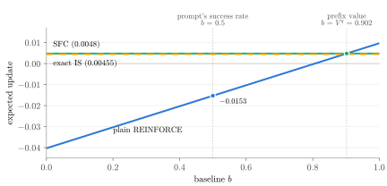

What Score-Function Centering Fixes, and What It Leaves
A bias–variance view of off-policy LLM RL updates
Contents
In September 2026, Together AI proposed score centering for off-policy RL of language models [1]. At every prefix, it subtracts from the trainer’s score its average under the sampler, the policy that generated the data. In their implementation it adds one term to the loss and less than \(1\%\) to the wall-clock time, and it gives strong results in their experiments. As far as we know, the same correction is already common in large-scale RL recipes at frontier labs, under names such as “score function centering”, “alternative tokens”, and “covariance learning”. Following Zhang [2], we call it SFC.
Why does it work, and what does it not fix? Several explanations exist [1–3]; this post answers with a basic fact from statistics. A policy-gradient update is an estimate of the true gradient of the expected reward, computed from a batch of sampled responses. For any estimate \(\hat G\) of a quantity \(G\), the mean squared error is the squared bias plus the variance [4, 5]:
The bias is how far the estimate is from \(G\) on average, and more data does not reduce it. The variance is how much the estimate scatters around its own average, and it shrinks as the batch grows. On-policy, REINFORCE is unbiased, and a baseline that does not depend on the response leaves the expected update unchanged while it can lower the variance. Off-policy, the samples come from a sampler that differs from the policy being trained, the update becomes biased, and every correction in use changes the bias, the variance, or both. In these terms, the answer has three parts:
- Bias.
- SFC removes a key bias of off-policy updates, called drift (Section 2). It is the baseline’s error times a vector that averages to zero on-policy but not off-policy.
- SFC leaves two other biases (Section 3). The tokens are weighted by the sampler’s probabilities instead of the trainer’s, and the prefixes and continuations still come from the sampler; keeping the trainer close to the sampler helps keep both small.
- Variance (Section 4). Importance sampling (IS) without truncation removes drift and the first of these biases, but in many settings, especially fully asynchronous RL with large staleness, its variance is much larger than SFC’s. Truncated importance sampling (TIS) [6] caps the ratio to control large weights, which brings bias back.
- Total error (Section 5). Combining the two, TIS + centering (weight with the truncated ratio, then center as SFC does) can give a better trade-off than either alone; in a toy model it is most often the best at a moderate lag and a middle range of sample sizes.
A longer companion note [7] has the derivations, the general version of each result, and other methods such as GSPO [8], length-weighted baselines, and PPO’s clipping [9].
1Setup
The sampler \(q\) generates the data, and the trainer \(p = p_\theta\) is the policy being updated. They differ because of engine mismatch (quantization, different kernels), staleness (asynchronous training), or sampling settings (temperature, top-\(k\)). At a prefix \(s\), the trainer has logits \(z(s, v)\), and the score of token \(v\) is
The goal is the gradient \(\grad J\) of the trainer’s expected reward. REINFORCE [10] multiplies each token’s score by \(R - b\), where \(R\) is the reward and \(b\) a baseline that does not depend on the response itself, such as a fixed value or the mean reward of the other responses (RLOO [12, 13]); GRPO’s group mean [11] includes the response itself (full version, Chapter 8). We write \(Q^q(s, v)\) for the expected reward after choosing \(v\) and letting the sampler finish, \(V^q(s) = \sum_v q(v \mid s)\,Q^q(s, v)\) for the value of the prefix, and \(\Aq = Q^q - V^q\) for the advantage.
2The bias SFC removes: drift from the baseline’s error
On-policy, the score averages to zero, \(\E_p[g] = \sum_v \grad p(v) = 0\), so a baseline cannot change the expected update. Off-policy, the tokens come from \(q\), and \(\E_q[g] = m_q - m_p\) is in general not zero. To see what this does, fix a prefix \(s\) and average over the next token \(v \sim q\) and the sampler’s continuation. The baseline does not depend on the response, so token \(v\) is multiplied on average by \(Q^q(s, v) - \E[b \mid s]\). Writing \(Q^q = \Aq + V^q\) and using \(\sum_v q(v)\,g(s, v) = m_q(s) - m_p(s)\),
The two terms play very different roles:
- Signal. This is the term we want to keep. It has the form of the ordinary policy gradient, an advantage-weighted average of the score, but with the sampler’s advantage \(\Aq\) and token probabilities, so it is not yet the trainer’s policy gradient (Section 3 measures the difference).
- Drift. This is the problem. Its first factor, \(V^q(s) - \E[b \mid s]\), is the gap between the expected baseline and the value of the current prefix, which is the ideal baseline here. The baseline is often computed from other responses to the same prompt, so it can be random (hence its conditional mean), and even an accurate prompt-level baseline can be far from the value of the current prefix. The second factor is the mean of the score under the sampler, which is zero on-policy, so there this gap does no harm. Off-policy the second factor is in general not zero, so the baseline, added to reduce variance, now brings in bias.
The gap between the baseline and the prefix value can be large, for two reasons:
- Group baselines such as RLOO’s and GRPO’s estimate the value of the prompt, but they are used at every prefix, and halfway through a response the prefix value is often near \(0\) or \(1\).
- The signal shrinks as the tokens’ qualities become similar, but this gap need not shrink with it.
So drift can dominate even when \(q\) and \(p\) are close, and more samples do not average it out.
SFC sets the second factor to zero by centering the score under the sampler, \(h = g - \E_q[g] = \grad z - m_q\). The same computation with \(h\) in place of \(g\) gives
The second line uses \(\sum_v q(v)\,\Aq(s, v) = 0\): shifting the score by a vector that does not depend on \(v\) (from \(m_q\) to \(m_p\)) leaves the sum unchanged. So SFC keeps the signal exactly and removes the drift, for any baseline that does not depend on the response: in Example 1 the expected update is \(0.0048\) for every \(b\) (Figure 1). The center \(m_q\) has to come from the sampler, in one of two ways:
- Independent auxiliary samples. Draw \(K\) extra tokens \(a'_1, \dots, a'_K\) from \(q\) at the same prefix, independently of the main sample, and use their average score. This is unbiased but adds sampling variance.
- Logged head with a modeled tail. Keep the sampler’s top-\(k\) probabilities and spread the remaining mass according to the trainer (Together AI’s default, \(k = 128\) [1, 14]). This adds no sampling noise, but it is an approximation and can leave some drift.
With auxiliary samples, the loss for a sampled token \(a\) is
\[\mathcal L \;=\; -(R - b)\,\Big[\log p(a \mid s) - \frac{1}{K}\sum_{k=1}^{K}\log p(a'_k \mid s)\Big],\]with \(R - b\) held fixed. Its gradient is \(-(R - b)\) times an unbiased estimate of \(h(a)\); the log-softmax normalizer cancels, so the same loss can be written with logits.


3The bias SFC leaves: two gaps
With drift gone, compare what SFC estimates with what we want. The trainer’s true gradient is the same kind of signal, summed over positions \(t\), but with everything taken from the trainer: its prefixes, its token probabilities, and its advantage \(\Ap\) (continuations by the trainer). Since \(\sum_v p(v)\,\Ap(s, v) = 0\), the same shift gives
SFC estimates \(\sum_t \E_{s_t \sim q}\big[\Cov_q(\Aq, \grad z)\big]\). Adding and subtracting \(\sum_t \E_{s_t \sim q}\big[\Cov_p(\Aq, \grad z)\big]\) splits the difference into two gaps:
3.1Token weights (B)
B is about which tokens count at each prefix. Exact importance sampling multiplies each sample by \(r = p/q\), which turns the sampler’s token weights into the trainer’s (this needs \(q(v) > 0\) wherever \(p(v) > 0\), which hard top-\(k\) or top-\(p\) sampling can break):
because \(\sum_v p(v)\,g(s, v) = 0\). The same fact removes drift, so exact IS removes both drift and B.
3.2Prefixes and continuations (C)
C is about which prefixes the data contain and how they are finished. The current token’s ratio cannot fix it. Weighting by the ratio over the whole response is one exact fix, but its variance grows exponentially with the length: with independent per-token ratios of standard deviation \(0.05\), the second moment of the product over \(500\) tokens is about \(3.5\), and with \(0.1\) it is about \(145\).
3.3Both gaps shrink when the trainer stays close to the sampler
Both gaps vanish when \(p = q\), and bounds on them tighten as the two policies get closer:
- B. At a prefix, \(\Cov_q(\Aq, \grad z) - \Cov_p(\Aq, \grad z) = \sum_v \big(q(v) - p(v)\big)\,\Aq(v)\,g(v)\), a sum weighted by \(q - p\), so by Pinsker’s inequality its length is at most \(\max_v\|\Aq(v)\,g(v)\|\,\sum_v|q(v) - p(v)| \le \max_v\|\Aq(v)\,g(v)\|\,\sqrt{2\,\KL(q\,\|\,p)}\) [2].
- C. In the objective, the matching gap is second order in the total variation between the policies (the TRPO bound [15]); in the gradient it is first order, and it grows with the length of the response (full version, Chapters 7 and 11).
So limiting the age of samples, or adding a KL penalty toward the sampler as Zhang [2] and Tinker’s StableReinforce loss [16] do, helps keep both gaps small, though it removes neither; how small also depends on the length of the response and the size of the advantages.
One caveat: suppose you deploy the inference engine itself, its logits are the trainer’s plus an error that does not change with \(\theta\), the rollouts come from the current parameters, and the center is exact. Then \(h = \grad\log q_\theta\), SFC is the exact gradient for what you deploy, and B and C are not errors. Under staleness the target is the trainer, and both gaps are real.
4Variance: SFC versus importance sampling
Unless stated otherwise, the comparisons below use exact centering; sampling the center adds variance, and modeling the sampler’s tail can leave some bias. Removing B with importance sampling has a price. Write \(M(v) = \E\big[(R - b)^2 \,\big|\, s, v\big]\) for the mean squared multiplier of token \(v\). The second moment of the update from one sample is
and the variance is this minus the squared length of the mean. Two things follow:
- IS. The sampler’s probability \(q(v)\) sits in the denominator, so tokens that the sampler rarely draws but the trainer likes dominate. The usual summary is the effective sample size, \(N/\E_q[r^2]\) with \(\E_q[r^2] = \sum_v p(v)^2/q(v)\). In fully asynchronous RL, where samples can be many steps old, the ratios spread out, the effective sample size drops, and the variance of IS can be far above that of SFC.
- SFC. No ratio enters its multiplier, even when its center is estimated from alternative tokens. Its variance still depends on the baseline: in Example 1, with success/failure rewards, the samples needed before the standard deviation of the average falls to the size of its mean drop from about \(9350\) at \(b = 0\) to \(950\) at \(b = V^q\). The baseline cannot remove the noise of the outcome itself.
4.1Truncation controls large weights and brings bias back
Truncated IS caps the ratio, \(\wt = \min(r, \bar r)\) [6]; masked IS (MIS) sets it to zero outside an interval [17, 18]. No weight exceeds the cap, so large weights cannot dominate the update, but bias comes back in two ways:
- Drift returns. Once ratios are capped, \(\E_q[\wt\,g] \neq 0\), so the multiplier no longer averages to zero.
- B is corrected only partly. Tokens whose ratio exceeds the cap keep part of the sampler’s weight.
5The total error: TIS + centering
Eq. (1) adds up the bias and variance of Sections 2–4. First we add a third candidate, between SFC and exact IS.
5.1TIS + centering
Of the two problems of truncation (Subsection 4.1), the first has a simple fix: weight first, then center, as SFC does. We call this TIS + centering: \(f = \wt\,g - \E_q[\wt\,g]\). The computation of Section 2 with \(f\) in place of \(g\) gives
where the second line again uses \(\sum_v q(v)\,\Aq(s, v) = 0\), now to drop the constant \(\E_q[\wt\,g]\). So drift is gone; tokens whose ratio is below the cap get the trainer’s weight exactly, and the others are corrected partly. The order matters: centering first and then multiplying by \(r\) gives \(\E_q[r\,h] = m_p - m_q \neq 0\), which is drift with the opposite sign.
Capping also lowers the total weight to \(Z = \sum_v \min\big(p(v), \bar r\,q(v)\big) \le 1\), which acts like a smaller step at this prefix. To compare directions and noise rather than step sizes, the comparisons below use \(f/Z\), so that all three methods have total weight \(1\). Without this rescaling, TIS + centering does even better with few samples, partly only because its steps are shorter (full version, Subsection 9.6).
5.2The total error at one prefix
To write Eq. (1) for these estimators, we simplify in two ways.
- One prefix. We fix a prefix \(s\) and average \(N\) independent single-sample updates there. Call one of them \(\hat g\) and their average \(\hat g_N\).
- The sampler’s continuations. The target is what exact IS estimates at this prefix, \(G(s) = \sum_v p(v)\,\Aq(s, v)\,g(s, v) = \Cov_p(\Aq, \grad z)\). It still uses the sampler’s advantage \(\Aq\), so gap C is left out: none of the three methods removes it, and a small KL keeps it small (Subsection 3.3).
For a vector, Eq. (1) holds with squared lengths:
Equations (4), (7), (8) and (9) give the two ingredients for each method:
| method | bias, \(\E[\hat g] - G(s)\) | second moment, \(\E\|\hat g\|^2\) |
|---|---|---|
| SFC | \(\sum_v \big(q(v) - p(v)\big)\,\Aq(v)\,g(v)\) | \(\sum_v q(v)\,M(v)\,\|h(v)\|^2\) |
| exact IS | \(0\) | \(\sum_v \tfrac{p(v)^2}{q(v)}\,M(v)\,\|g(v)\|^2\) |
| TIS + centering | \(\tfrac{1}{Z}\sum_{v:\,r(v) > \bar r} \big(p(v) - \bar r\,q(v)\big)\big(G(s) - \Aq(v)\,g(v)\big)\) | \(\tfrac{1}{Z^2}\sum_v q(v)\,M(v)\,\|f(v)\|^2\) |
SFC has a bias (the gap B at this prefix) but no ratio in its second moment; exact IS has no bias but the ratio \(p/q\); the bias of TIS + centering comes only from tokens above the cap, and its weights are at most \(\bar r/Z\). Since only the variance term shrinks with \(N\), the best method depends on \(N\). Roughly, in real training a prefix appears once but the update adds up many prefixes; when their B gaps point the same way, B adds up while the noise partly averages out, as with a larger \(N\).
In Example 2, with deterministic returns and \(b = V^q\), SFC has squared bias \(0.0074\) and single-sample variance \(0.102\), and exact IS has no bias and variance \(0.273\), so SFC has the lower total error below about \(23\) samples and exact IS above.
5.3Which method has the lowest total error
To see how the terms of Eq. (10) compare, we use random problems with 20 tokens in which a parameter \(\kappa\) sets the lag between trainer and sampler (full version, Subsection 9.6). There, at a moderate lag, TIS + centering removes half or more of B at less variance than exact IS, and at a very large lag it gains little. Table 1 adds the two terms.
| ESS fraction | \(N = 1\) | \(N = 16\) | \(N = 64\) | \(N = 256\) |
|---|---|---|---|---|
| \(0.8\)–\(1\) | SFC \(57\%\) | SFC \(48\%\) | exact IS \(62\%^{\ast}\) | exact IS \(84\%^{\ast}\) |
| \(0.6\)–\(0.8\) | SFC \(65\%\) | TIS + centering \(44\%\) | TIS + centering \(65\%\) | exact IS \(71\%\) |
| \(0.4\)–\(0.6\) | SFC \(68\%\) | TIS + centering \(45\%\) | TIS + centering \(46\%\) | exact IS \(92\%\) |
| \(0.2\)–\(0.4\) | SFC \(78\%\) | SFC \(47\%\) | exact IS \(55\%\) | exact IS \(94\%\) |
| below \(0.2\) | SFC \(87\%\) | SFC \(73\%\) | SFC \(46\%\) | exact IS \(81\%\) |
Table 1: The method that most often has the lowest total error, Eq. (10), in the random toy: \(200{,}000\) problems with \(\kappa\) log-uniform between \(0.25\) and \(12\) (seed 11), deterministic return, \(b = V^q\), exact centering, \(\bar r = 2\), grouped by the ESS fraction \(1/\E_q[r^2]\). \(N\) is the number of independent samples at one prefix. Each cell gives the most frequent winner and its share, which can be under half; TIS + centering is \(f/Z\) (Subsection 5.1). \(^{\ast}\)Above \(0.8\) the cap rarely binds: in \(84\%\) of these problems TIS + centering equals exact IS, and those cases count as exact IS.
In this toy, the method that most often has the lowest error is:
- SFC with few samples, where the variance dominates;
- exact IS with many samples, where only bias is left;
- TIS + centering in between, when the effective sample size is moderate.
When the effective sample size is low, the cap binds on the tokens that carry most of B, so TIS + centering keeps much of the bias and still has more variance than SFC (in Example 2: distance to exact IS \(0.106\) versus \(0.086\), variance \(0.265\) versus \(0.102\)). Return noise and the choice of baseline also move these boundaries, in either direction.
In Together AI’s staleness experiments, with the sampler refreshed only every 64 steps, TIS + centering (and the same with MIS) worked better than SFC alone [1].
6In practice
- Decide the target. SFC is the exact gradient for the deployed sampler only under the conditions of Subsection 3.3.
- Use SFC with auxiliary tokens drawn independently of the main sample, or with a logged top-\(k\) head (approximate in the tail), and compute \(q\) with the sampler’s actual temperature and truncation.
- With TIS or MIS, weight first and then center (TIS + centering), and write the loss with log-probabilities rather than logits.
- Keep \(p\) close to \(q\) with a limit on sample age or a KL penalty toward the sampler, and add TIS + centering when the lag is moderate.
- Check GRPO-style length and standard-deviation normalization separately [19]: they can change the expected update even on-policy (full version, Chapter 8).
References
- M. Marek and M. Ryabinin. Score Centering Stabilizes Off-policy Reinforcement Learning. arXiv:2609.20807, 2026.
- Y. Zhang (Yihua Zhang). Score Function Centering, a series of three blog posts, October 2026. https://normaluhr.github.io/en/p/score-function-centering/
- Palind. 关于 Score Centering 的五种解释：drift、BPO、理想 baseline、STE、局部分布族 (Five interpretations of score centering). In Chinese. QingKe community (青稞社区), October 13, 2026.
- Wikipedia. Mean squared error. https://en.wikipedia.org/wiki/Mean_squared_error
- Wikipedia. Bias of an estimator. https://en.wikipedia.org/wiki/Bias_of_an_estimator
- F. Yao et al. Your Efficient RL Framework Secretly Brings You Off-Policy RL Training. Blog post, August 2025.
- An Error Analysis of Off-Policy LLM RL Updates, Starting from Score-Function Centering (the full version of this post). October 2026.
- C. Zheng et al. Group Sequence Policy Optimization. arXiv:2507.18071, 2025.
- J. Schulman, F. Wolski, P. Dhariwal, A. Radford, and O. Klimov. Proximal Policy Optimization Algorithms. arXiv:1707.06347, 2017.
- R. J. Williams. Simple Statistical Gradient-Following Algorithms for Connectionist Reinforcement Learning. Machine Learning, 8(3–4):229–256, 1992.
- Z. Shao et al. DeepSeekMath: Pushing the Limits of Mathematical Reasoning in Open Language Models. arXiv:2402.03300, 2024.
- W. Kool, H. van Hoof, and M. Welling. Buy 4 REINFORCE Samples, Get a Baseline for Free! ICLR 2019 Workshop on Deep RL Meets Structured Prediction, 2019.
- A. Ahmadian et al. Back to Basics: Revisiting REINFORCE-Style Optimization for Learning from Human Feedback in LLMs. In ACL, pages 12248–12267, 2024.
- M. Marek. score-centering: official code. https://github.com/martin-marek/score-centering
- J. Schulman, S. Levine, P. Moritz, M. Jordan, and P. Abbeel. Trust Region Policy Optimization. In ICML, PMLR 37:1889–1897, 2015.
- Thinking Machines Lab. StableReinforce (
stable_reinforce), Tinker documentation, alpha, 2026. https://tinker-docs.thinkingmachines.ai/tinker/losses/stable-reinforce/ - Ling Team. Every Step Evolves: Scaling Reinforcement Learning for Trillion-Scale Thinking Model. arXiv:2510.18855, 2025. (IcePop.)
- J. Liu, Y. Li, et al. When Speed Kills Stability: Demystifying RL Collapse from the Training-Inference Mismatch. Blog post, September 2025.
- Z. Liu et al. Understanding R1-Zero-Like Training: A Critical Perspective. In COLM, 2025.